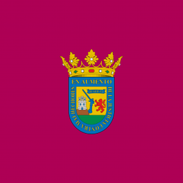
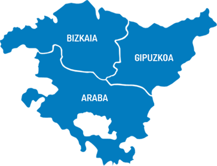

Blue Heaven 567
Creador y administrador de GDEuskadi
30 de agosto de 2003 ( años) Álava
¡Bienvenido a GD Euskadi!
En este sitio web podrás consultar el progreso de los jugadores de Geometry Dash originarios de la Comunidad Autónoma del País Vasco. Incluye mapas y los hardest que se tienen registro en Euskadi.
Fuertemente inspirada en GD España.
Blue Heaven 567
Creador y administrador de GDEuskadi
30 de agosto de 2003 ( años) Álava
Mapa Actual
